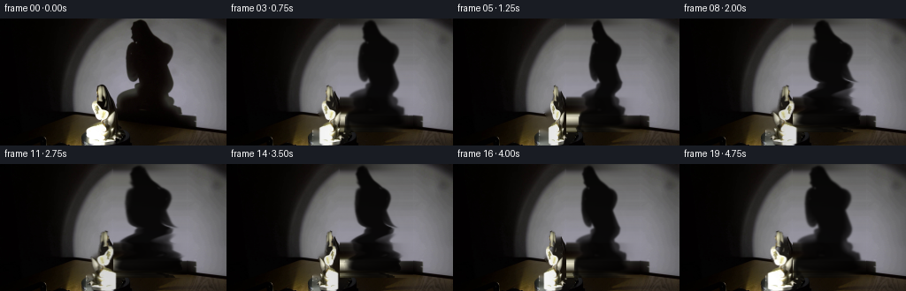
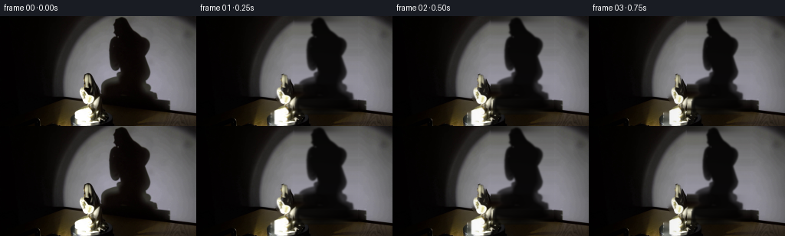
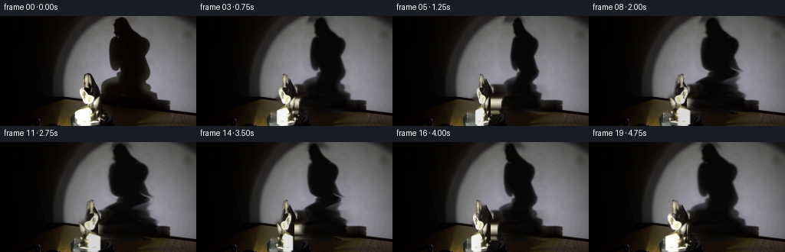
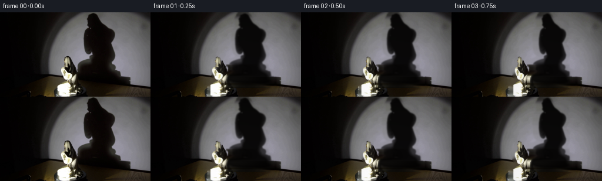

CODING AGENTS AS PIXEL WORLD MODELS
traex/GPT-5.6-Sol · 0084
点击播放 · 原生 RGB 像素
逐轮保存的候选
回放视频、检查图与代码变化。
每份候选均可单独播放。实际图片检查记录在下方工具轨迹中。
候选 01播放与检查图
点击播放 · 原生 RGB 像素


展开代码变化
--- 上一保存版本
+++ 本次保存版本
@@ -0,0 +1,200 @@
+from pathlib import Path
+import cv2
+import numpy as np
+from PIL import Image
+import artifact_io
+
+CASE_DIR = Path(__file__).resolve().parent
+
+
+def luminance(a):
+ a = a.astype(np.float32)
+ return 0.2126*a[..., 0] + 0.7152*a[..., 1] + 0.0722*a[..., 2]
+
+
+def porcelain_mask(rgb):
+ """Segment the compact, bright statue without any learned assets."""
+ bgr = cv2.cvtColor(rgb, cv2.COLOR_RGB2BGR)
+ gray = cv2.cvtColor(bgr, cv2.COLOR_BGR2GRAY)
+ h, w = gray.shape
+ labels = np.full((h, w), cv2.GC_BGD, np.uint8)
+ # The foreground bounds are read from this particular supplied first frame.
+ labels[72:144, 96:140] = cv2.GC_PR_FGD
+ yy, xx = np.indices((h, w))
+ core = (gray > 160) & (xx >= 96) & (xx < 140) & (yy >= 72)
+ labels[core] = cv2.GC_FGD
+ labels[72:144, 96:101] = cv2.GC_BGD
+ labels[72:144, 136:140] = cv2.GC_BGD
+ bg_model = np.zeros((1, 65), np.float64)
+ fg_model = np.zeros((1, 65), np.float64)
+ cv2.grabCut(bgr, labels, None, bg_model, fg_model, 8,
+ cv2.GC_INIT_WITH_MASK)
+ mask = ((labels == cv2.GC_FGD) | (labels == cv2.GC_PR_FGD)).astype(np.uint8)
+ # Close pinholes but retain the characteristic fine silhouette.
+ mask = cv2.morphologyEx(mask, cv2.MORPH_CLOSE,
+ cv2.getStructuringElement(cv2.MORPH_ELLIPSE, (3, 3)))
+ mask = cv2.GaussianBlur(mask.astype(np.float32), (0, 0), 0.62)
+ return np.clip(mask, 0.0, 1.0)
+
+
+def remove_statue(rgb, alpha):
+ # Telea reconstruction follows the local wall, shadow, and dark platform.
+ hard = (alpha > .035).astype(np.uint8) * 255
+ hard = cv2.dilate(hard, cv2.getStructuringElement(cv2.MORPH_ELLIPSE, (5, 5)))
+ bgr = cv2.cvtColor(rgb, cv2.COLOR_RGB2BGR)
+ fill = cv2.inpaint(bgr, hard, 4.0, cv2.INPAINT_TELEA)
+ return cv2.cvtColor(fill, cv2.COLOR_BGR2RGB)
+
+
+def reconstruct_shadow_wall(rgb):
+ """Estimate the illuminated wall underneath the original projected shadow."""
+ out = rgb.astype(np.float32).copy()
+ x0, x1, y1 = 128, 211, 129
+ # Smooth endpoint medians avoid copying sensor grain into long streaks.
+ left = np.median(rgb[:y1, 123:129].astype(np.float32), axis=1)
+ right = np.median(rgb[:y1, 211:217].astype(np.float32), axis=1)
+ t = np.linspace(0, 1, x1-x0, dtype=np.float32)[None, :, None]
+ # Smoothstep interpolation reads as the broad beam's natural falloff.
+ s = t*t*(3.0-2.0*t)
+ bridge = left[:, None, :]*(1-s) + right[:, None, :]*s
+ # Preserve very subtle wall grain, but not the low-frequency shadow itself.
+ smooth = cv2.GaussianBlur(rgb.astype(np.float32), (0, 0), 2.0)
+ grain = np.clip(rgb.astype(np.float32)-smooth, -1.6, 1.6)
+ bridge += grain[:y1, x0:x1] * .42
+ out[:y1, x0:x1] = bridge
+ return np.clip(out, 0, 255), (x0, x1, y1)
+
+
+def original_shadow_alpha(rgb, wall, roi):
+ x0, x1, y1 = roi
+ old_y = luminance(rgb[:y1, x0:x1])
+ wall_y = luminance(wall[:y1, x0:x1])
+ ratio = old_y / np.maximum(wall_y, 5.0)
+ a = np.clip((1.0-ratio)/0.96, 0.0, 0.96)
+ # Suppress noise outside an actual reduction in illumination.
+ a *= np.clip((wall_y-old_y-2.0)/10.0, 0.0, 1.0)
+ a = cv2.GaussianBlur(a, (0, 0), 0.85)
+ # The broad penumbra should remain soft but the umbra substantial.
+ return np.clip(a, 0.0, 0.95)
+
+
+def turn_shadow(alpha0, theta):
+ """Rotate the apparent profile of the large wall projection."""
+ h, w = alpha0.shape
+ c = np.cos(theta)
+ scale = 0.66 + 0.34*abs(c)
+ reverse = c < 0
+ out = np.zeros_like(alpha0)
+ xs = np.arange(w, dtype=np.float32)
+ for y in range(h):
+ row = alpha0[y]
+ mass = row.sum()
+ if mass < .03:
+ continue
+ center = float((row*xs).sum()/mass)
+ # Shadow base stays registered; upper portions visibly sweep on the wall.
+ sweep = 5.3*np.sin(theta)*(1.0-y/max(h-1, 1))
+ src = center + (xs-center-sweep)/scale
+ if reverse:
+ src = 2.0*center-src
+ out[y] = np.interp(src, xs, row, left=0.0, right=0.0)
+ return cv2.GaussianBlur(out, (0, 0), 0.48)
+
+
+def composite_shadow(frame, wall, shadow_a, roi):
+ x0, x1, y1 = roi
+ a = shadow_a[..., None]
+ # A tiny warm ambient component remains even in the deep umbra.
+ dark = np.zeros_like(wall[:y1, x0:x1], dtype=np.float32)
+ dark[..., 0] = 2.2
+ dark[..., 1] = 1.35
+ dark[..., 2] = 1.05
+ region = wall[:y1, x0:x1]*(1-a) + dark*a
+ frame[:y1, x0:x1] = region
+
+
+def transformed_statue(rgb, alpha, theta):
+ x0, x1, y0, y1 = 96, 138, 72, 144
+ src = rgb[y0:y1, x0:x1].astype(np.float32)
+ aa = alpha[y0:y1, x0:x1].astype(np.float32)
+ c = np.cos(theta)
+ width_scale = .62 + .38*abs(c)
+ new_w = max(12, int(round(src.shape[1]*width_scale)))
+ if c < 0:
+ src = src[:, ::-1].copy()
+ aa = aa[:, ::-1].copy()
+ # Resize premultiplied colors to avoid a dark or wall-colored moving rim.
+ premul = src*aa[..., None]
+ premul = cv2.resize(premul, (new_w, src.shape[0]), interpolation=cv2.INTER_LINEAR)
+ aaa = cv2.resize(aa, (new_w, src.shape[0]), interpolation=cv2.INTER_LINEAR)
+ col = premul/np.maximum(aaa[..., None], .025)
+ # Fixed spotlight gives changing ceramic highlights as the statue turns.
+ nx = np.linspace(-1, 1, new_w, dtype=np.float32)[None, :]
+ relight = 0.92 + 0.08*np.clip(np.cos(theta)+.30*nx*np.sin(theta), -1, 1)
+ col *= relight[..., None]
+ # Slight perspective displacement is strongest at the upper profile.
+ dx = int(round(2.5*np.sin(theta)))
+ cx = 116 + dx
+ left = cx-new_w//2
+ return np.clip(col, 0, 255), np.clip(aaa, 0, 1), left, y0
+
+
+def add_platform_rotation(frame, theta):
+ """Subpixel dust/specular cues rotating clockwise on the black disk."""
+ overlay = frame.copy()
+ cx, cy = 115.0, 145.0
+ phases = (0.28, 1.72, 3.30, 4.61, 5.45)
+ radii = (35.0, 50.0, 43.0, 57.0, 27.0)
+ gray = luminance(frame)
+ for k, (p, r) in enumerate(zip(phases, radii)):
+ q = p + theta
+ x = int(round(cx+r*np.cos(q)))
+ y = int(round(cy+.18*r*np.sin(q)))
+ if 1 <= x < 255 and 132 <= y < 144 and gray[y, x] < 92:
+ # Tangential dashes rather than implausibly bright markers.
+ tx = -np.sin(q); ty = .18*np.cos(q)
+ length = 2 if k % 2 == 0 else 1
+ p0 = (int(round(x-tx*length)), int(round(y-ty*length)))
+ p1 = (int(round(x+tx*length)), int(round(y+ty*length)))
+ base = frame[y, x].astype(np.int16)
+ color = tuple(int(v) for v in np.clip(base + np.array([10, 9, 8]), 0, 255))
+ cv2.line(overlay, p0, p1, color, 1, cv2.LINE_AA)
+ # Affect only the physically dark lower platform region.
+ permitted = ((gray < 100) & (np.indices(gray.shape)[0] >= 131))[..., None]
+ mixed = frame.astype(np.float32)*.58 + overlay.astype(np.float32)*.42
+ frame[:] = np.where(permitted, mixed, frame)
+
+
+def generate():
+ first = np.asarray(Image.open(CASE_DIR/'first_frame.png').convert('RGB'), dtype=np.uint8)
+ assert first.shape == (144, 256, 3)
+ statue_a = porcelain_mask(first)
+ clean = remove_statue(first, statue_a).astype(np.float32)
+ wall, roi = reconstruct_shadow_wall(first)
+ shadow0 = original_shadow_alpha(first, wall, roi)
+
+ frames = [first.copy()]
+ for i in range(1, 20):
+ # One steady clockwise revolution in five seconds (18 degrees per frame).
+ theta = 2.0*np.pi*i/20.0
+ frame = clean.copy()
+ sh = turn_shadow(shadow0, theta)
+ composite_shadow(frame, wall, sh, roi)
+ add_platform_rotation(frame, theta)
+ obj, aa, left, top = transformed_statue(first, statue_a, theta)
+ h, w = aa.shape
+ x0 = max(left, 0); x1 = min(left+w, 256)
+ sy0 = x0-left; sy1 = sy0+(x1-x0)
+ a = aa[:, sy0:sy1, None]
+ frame[top:top+h, x0:x1] = (obj[:, sy0:sy1]*a +
+ frame[top:top+h, x0:x1]*(1-a))
+ frames.append(np.clip(np.rint(frame), 0, 255).astype(np.uint8))
+ frames = np.stack(frames)
+ assert frames.shape == (20, 144, 256, 3)
+ assert frames.dtype == np.uint8
+ assert np.array_equal(frames[0], first)
+ artifact_io.save(frames, CASE_DIR)
+
+
+if __name__ == '__main__':
+ generate()
候选 02播放与检查图
点击播放 · 原生 RGB 像素


展开代码变化
--- 上一保存版本
+++ 本次保存版本
@@ -172,6 +172,19 @@
clean = remove_statue(first, statue_a).astype(np.float32)
wall, roi = reconstruct_shadow_wall(first)
shadow0 = original_shadow_alpha(first, wall, roi)
+ # The interpolated wall is needed only beneath the original umbra. Keep
+ # every already-visible wall pixel untouched; this avoids a conspicuous
+ # whole-rectangle change between the supplied frame and frame 01.
+ x0, x1, y1 = roi
+ support = (shadow0 > .012).astype(np.uint8)
+ support = cv2.dilate(support,
+ cv2.getStructuringElement(cv2.MORPH_ELLIPSE, (7, 7)))
+ support = cv2.GaussianBlur(support.astype(np.float32), (0, 0), 1.15)
+ local_wall = first.astype(np.float32)
+ blend = support[..., None]
+ local_wall[:y1, x0:x1] = (wall[:y1, x0:x1]*blend +
+ local_wall[:y1, x0:x1]*(1.0-blend))
+ wall = local_wall
frames = [first.copy()]
for i in range(1, 20):
可观测工具轨迹
实际执行的命令与返回图片。
命令 1exit 0
/bin/bash -lc "cat GENERATION_RULES.md && printf '\\n--- PROMPT ---\\n' && cat prompt.txt"
命令 2exit 0
/bin/bash -lc "find . -maxdepth 2 -type f -printf '%p\\n' | sort && printf '\\n--- TOOLS ---\\n' && command -v ffmpeg || true && command -v python3 && python3 - <<'PY'
try:
import cv2; print('cv2', cv2.__version__)
except Exception as e: print('no cv2', e)
try:
from PIL import Image; print('PIL ok')
except Exception as e: print('no PIL', e)
PY"命令 3exit 0
/bin/bash -lc 'cat artifact_io.py'
命令 4exit 0
/bin/bash -lc "python3 - <<'PY'
from PIL import Image
import numpy as np
im=np.array(Image.open('first_frame.png').convert('RGB'))
print('shape',im.shape,'dtype',im.dtype,'minmax', im.min(), im.max())
print('mean/std',im.mean((0,1)), im.std((0,1)))
# row/col avg luminance
lum=im.mean(2)
for y in range(0,144,8): print('row',y,round(lum[y].mean(),1), np.percentile(lum[y],[0,10,50,90,100]).round(1))
print('cols')
for x in range(0,256,16): print('col',x,round(lum[:,x].mean(),1),np.percentile(lum[:,x],[0,10,50,90,100]).round(1))
# coarse grid avg rgb 16x12 cells
for y in range(0,144,12):
print(' '.join('%02x%02x%02x'%tuple(im[y:y+12,x:x+16].mean((0,1)).astype(int)) for x in range(0,256,16)))
PY"命令 5exit 0
/bin/bash -lc "python3 - <<'PY'
from PIL import Image
import numpy as np
im=np.array(Image.open('first_frame.png').convert('L').resize((128,72)))
chars=' .,:;irsXA253hMHGS#9B&@'
# equal fixed bins
for y,row in enumerate(im):
print(''.join(chars[min(len(chars)-1,int(v)*len(chars)//256)] for v in row))
PY"命令 6exit 0
/bin/bash -lc "python3 - <<'PY'
from PIL import Image
import numpy as np
A=np.array(Image.open('first_frame.png').convert('RGB'))
Y=(.2126*A[:,:,0]+.7152*A[:,:,1]+.0722*A[:,:,2])
# x 64:224 y56:144, 2x2 downsample percentile mean
chars=' .,:;irsXA253hMHGS#9B&@'
for y in range(56,144,2):
vals=[]
for x in range(64,224,2): vals.append(Y[y:y+2,x:x+2].mean())
print(f'{y:03d} '+''.join(chars[min(len(chars)-1,int(v)*len(chars)//256)] for v in vals))
# threshold bright crop x80:150 y60:144 one px, 2 vertical averaging only
print('----')
for y in range(65,144):
print(f'{y:03} '+''.join('@' if Y[y,x]>=220 else '#' if Y[y,x]>=180 else 'H' if Y[y,x]>=140 else 'A' if Y[y,x]>=100 else 's' if Y[y,x]>=60 else ':' if Y[y,x]>=25 else '.' if Y[y,x]>=8 else ' ' for x in range(70,170)))
PY"命令 7exit 0
/bin/bash -lc "python3 - <<'PY'
import cv2, numpy as np
from PIL import Image
im=np.array(Image.open('first_frame.png').convert('RGB'))
g=cv2.cvtColor(im,cv2.COLOR_RGB2GRAY)
for t in [160,180,200,220,240]:
m=(g>t).astype(np.uint8)
n,L,S,C=cv2.connectedComponentsWithStats(m,8)
print('\\nt',t)
for i in np.argsort(S[1:,4])[::-1][:15]+1:
x,y,w,h,a=S[i]; print((x,y,w,h,a),'cent',C[i].round(1))
# dark comps under background? edges
cv2.imwrite('.tmp/gray.png',g)
PY"命令 8exit 0
/bin/bash -lc "python3 - <<'PY'
import cv2,numpy as np
from PIL import Image
im=np.array(Image.open('first_frame.png').convert('RGB'))
g=cv2.cvtColor(im,cv2.COLOR_RGB2GRAY)
for y in [60,70,75,80,85,90,95,100,105,110,115,120,125,130,135,140,143]:
print('\\ny',y)
for x in range(60,256,4): print('%3d'%g[y,x],end=' ')
print()
# edge connected comps
ed=cv2.Canny(g,30,80)
n,L,S,C=cv2.connectedComponentsWithStats((ed>0).astype('uint8'),8)
print('edge comps')
for i in np.argsort(S[1:,4])[::-1][:30]+1:
x,y,w,h,a=S[i]; print(x,y,w,h,a,C[i])
PY"命令 9exit 0
/bin/bash -lc "python3 - <<'PY'
from PIL import Image
import numpy as np
im=np.array(Image.open('first_frame.png').convert('L'))
for y in range(0,144,4):
print(f'{y:3}:', ' '.join(f'{int(im[y,x]):3}' for x in range(0,256,8)))
PY"命令 10exit 0
/bin/bash -lc "cat > .tmp/testmask.py <<'PY'
import cv2,numpy as np
from PIL import Image
im=cv2.imread('first_frame.png')
g=cv2.cvtColor(im,cv2.COLOR_BGR2GRAY)
mask=np.full(g.shape,cv2.GC_BGD,np.uint8)
# probable fg manually broad
mask[72:144,96:140]=cv2.GC_PR_FGD
# probable bg edges around
# sure foreground from high white in region and distinctive saturation low
mask[(g>170)&(np.indices(g.shape)[1]>=96)&(np.indices(g.shape)[1]<140)&(np.indices(g.shape)[0]>=72)]=cv2.GC_FGD
# prevent obvious wall strips
mask[72:144,96:101]=cv2.GC_BGD; mask[72:144,136:140]=cv2.GC_BGD
bg=np.zeros((1,65),np.float64); fg=np.zeros((1,65),np.float64)
cv2.grabCut(im,mask,None,bg,fg,8,cv2.GC_INIT_WITH_MASK)
m=np.where((mask==1)|(mask==3),255,0).astype('uint8')
cv2.imwrite('.tmp/mask.png',m)
for y in range(70,144):
xs=np.where(m[y]>0)[0]
print(y, (xs.min(),xs.max(),len(xs)) if len(xs) else None, ''.join('#' if m[y,x] else '.' for x in range(90,146)))
PY
python3 .tmp/testmask.py"命令 11exit 0
/bin/bash -lc "cat > generate.py <<'PY'
from pathlib import Path
import cv2
import numpy as np
from PIL import Image
import artifact_io
CASE_DIR = Path(__file__).resolve().parent
def luminance(a):
a = a.astype(np.float32)
return 0.2126*a[..., 0] + 0.7152*a[..., 1] + 0.0722*a[..., 2]
def porcelain_mask(rgb):
\"\"\"Segment the compact, bright statue without any learned assets.\"\"\"
bgr = cv2.cvtColor(rgb, cv2.COLOR_RGB2BGR)
gray = cv2.cvtColor(bgr, cv2.COLOR_BGR2GRAY)
h, w = gray.shape
labels = np.full((h, w), cv2.GC_BGD, np.uint8)
# The foreground bounds are read from this particular supplied first frame.
labels[72:144, 96:140] = cv2.GC_PR_FGD
yy, xx = np.indices((h, w))
core = (gray > 160) & (xx >= 96) & (xx < 140) & (yy >= 72)
labels[core] = cv2.GC_FGD
labels[72:144, 96:101] = cv2.GC_BGD
labels[72:144, 136:140] = cv2.GC_BGD
bg_model = np.zeros((1, 65), np.float64)
fg_model = np.zeros((1, 65), np.float64)
cv2.grabCut(bgr, labels, None, bg_model, fg_model, 8,
cv2.GC_INIT_WITH_MASK)
mask = ((labels == cv2.GC_FGD) | (labels == cv2.GC_PR_FGD)).astype(np.uint8)
# Close pinholes but retain the characteristic fine silhouette.
mask = cv2.morphologyEx(mask, cv2.MORPH_CLOSE,
cv2.getStructuringElement(cv2.MORPH_ELLIPSE, (3, 3)))
mask = cv2.GaussianBlur(mask.astype(np.float32), (0, 0), 0.62)
return np.clip(mask, 0.0, 1.0)
def remove_statue(rgb, alpha):
# Telea reconstruction follows the local wall, shadow, and dark platform.
hard = (alpha > .035).astype(np.uint8) * 255
hard = cv2.dilate(hard, cv2.getStructuringElement(cv2.MORPH_ELLIPSE, (5, 5)))
bgr = cv2.cvtColor(rgb, cv2.COLOR_RGB2BGR)
fill = cv2.inpaint(bgr, hard, 4.0, cv2.INPAINT_TELEA)
return cv2.cvtColor(fill, cv2.COLOR_BGR2RGB)
def reconstruct_shadow_wall(rgb):
\"\"\"Estimate the illuminated wall underneath the original projected shadow.\"\"\"
out = rgb.astype(np.float32).copy()
x0, x1, y1 = 128, 211, 129
# Smooth endpoint medians avoid copying sensor grain into long streaks.
left = np.median(rgb[:y1, 123:129].astype(np.float32), axis=1)
right = np.median(rgb[:y1, 211:217].astype(np.float32), axis=1)
t = np.linspace(0, 1, x1-x0, dtype=np.float32)[None, :, None]
# Smoothstep interpolation reads as the broad beam's natural falloff.
s = t*t*(3.0-2.0*t)
bridge = left[:, None, :]*(1-s) + right[:, None, :]*s
# Preserve very subtle wall grain, but not the low-frequency shadow itself.
smooth = cv2.GaussianBlur(rgb.astype(np.float32), (0, 0), 2.0)
grain = np.clip(rgb.astype(np.float32)-smooth, -1.6, 1.6)
bridge += grain[:y1, x0:x1] * .42
out[:y1, x0:x1] = bridge
return np.clip(out, 0, 255), (x0, x1, y1)
def original_shadow_alpha(rgb, wall, roi):
x0, x1, y1 = roi
old_y = luminance(rgb[:y1, x0:x1])
wall_y = luminance(wall[:y1, x0:x1])
ratio = old_y / np.maximum(wall_y, 5.0)
a = np.clip((1.0-ratio)/0.96, 0.0, 0.96)
# Suppress noise outside an actual reduction in illumination.
a *= np.clip((wall_y-old_y-2.0)/10.0, 0.0, 1.0)
a = cv2.GaussianBlur(a, (0, 0), 0.85)
# The broad penumbra should remain soft but the umbra substantial.
return np.clip(a, 0.0, 0.95)
def turn_shadow(alpha0, theta):
\"\"\"Rotate the apparent profile of the large wall projection.\"\"\"
h, w = alpha0.shape
c = np.cos(theta)
scale = 0.66 + 0.34*abs(c)
reverse = c < 0
out = np.zeros_like(alpha0)
xs = np.arange(w, dtype=np.float32)
for y in range(h):
row = alpha0[y]
mass = row.sum()
if mass < .03:
continue
center = float((row*xs).sum()/mass)
# Shadow base stays registered; upper portions visibly sweep on the wall.
sweep = 5.3*np.sin(theta)*(1.0-y/max(h-1, 1))
src = center + (xs-center-sweep)/scale
if reverse:
src = 2.0*center-src
out[y] = np.interp(src, xs, row, left=0.0, right=0.0)
return cv2.GaussianBlur(out, (0, 0), 0.48)
def composite_shadow(frame, wall, shadow_a, roi):
x0, x1, y1 = roi
a = shadow_a[..., None]
# A tiny warm ambient component remains even in the deep umbra.
dark = np.zeros_like(wall[:y1, x0:x1], dtype=np.float32)
dark[..., 0] = 2.2
dark[..., 1] = 1.35
dark[..., 2] = 1.05
region = wall[:y1, x0:x1]*(1-a) + dark*a
frame[:y1, x0:x1] = region
def transformed_statue(rgb, alpha, theta):
x0, x1, y0, y1 = 96, 138, 72, 144
src = rgb[y0:y1, x0:x1].astype(np.float32)
aa = alpha[y0:y1, x0:x1].astype(np.float32)
c = np.cos(theta)
width_scale = .62 + .38*abs(c)
new_w = max(12, int(round(src.shape[1]*width_scale)))
if c < 0:
src = src[:, ::-1].copy()
aa = aa[:, ::-1].copy()
# Resize premultiplied colors to avoid a dark or wall-colored moving rim.
premul = src*aa[..., None]
premul = cv2.resize(premul, (new_w, src.shape[0]), interpolation=cv2.INTER_LINEAR)
aaa = cv2.resize(aa, (new_w, src.shape[0]), interpolation=cv2.INTER_LINEAR)
col = premul/np.maximum(aaa[..., None], .025)
# Fixed spotlight gives changing ceramic highlights as the statue turns.
nx = np.linspace(-1, 1, new_w, dtype=np.float32)[None, :]
relight = 0.92 + 0.08*np.clip(np.cos(theta)+.30*nx*np.sin(theta), -1, 1)
col *= relight[..., None]
# Slight perspective displacement is strongest at the upper profile.
dx = int(round(2.5*np.sin(theta)))
cx = 116 + dx
left = cx-new_w//2
return np.clip(col, 0, 255), np.clip(aaa, 0, 1), left, y0
def add_platform_rotation(frame, theta):
\"\"\"Subpixel dust/specular cues rotating clockwise on the black disk.\"\"\"
overlay = frame.copy()
cx, cy = 115.0, 145.0
phases = (0.28, 1.72, 3.30, 4.61, 5.45)
radii = (35.0, 50.0, 43.0, 57.0, 27.0)
gray = luminance(frame)
for k, (p, r) in enumerate(zip(phases, radii)):
q = p + theta
x = int(round(cx+r*np.cos(q)))
y = int(round(cy+.18*r*np.sin(q)))
if 1 <= x < 255 and 132 <= y < 144 and gray[y, x] < 92:
# Tangential dashes rather than implausibly bright markers.
tx = -np.sin(q); ty = .18*np.cos(q)
length = 2 if k % 2 == 0 else 1
p0 = (int(round(x-tx*length)), int(round(y-ty*length)))
p1 = (int(round(x+tx*length)), int(round(y+ty*length)))
base = frame[y, x].astype(np.int16)
color = tuple(int(v) for v in np.clip(base + np.array([10, 9, 8]), 0, 255))
cv2.line(overlay, p0, p1, color, 1, cv2.LINE_AA)
# Affect only the physically dark lower platform region.
permitted = ((gray < 100) & (np.indices(gray.shape)[0] >= 131))[..., None]
mixed = frame.astype(np.float32)*.58 + overlay.astype(np.float32)*.42
frame[:] = np.where(permitted, mixed, frame)
def generate():
first = np.asarray(Image.open(CASE_DIR/'first_frame.png').convert('RGB'), dtype=np.uint8)
assert first.shape == (144, 256, 3)
statue_a = porcelain_mask(first)
clean = remove_statue(first, statue_a).astype(np.float32)
wall, roi = reconstruct_shadow_wall(first)
shadow0 = original_shadow_alpha(first, wall, roi)
frames = [first.copy()]
for i in range(1, 20):
# One steady clockwise revolution in five seconds (18 degrees per frame).
theta = 2.0*np.pi*i/20.0
frame = clean.copy()
sh = turn_shadow(shadow0, theta)
composite_shadow(frame, wall, sh, roi)
add_platform_rotation(frame, theta)
obj, aa, left, top = transformed_statue(first, statue_a, theta)
h, w = aa.shape
x0 = max(left, 0); x1 = min(left+w, 256)
sy0 = x0-left; sy1 = sy0+(x1-x0)
a = aa[:, sy0:sy1, None]
frame[top:top+h, x0:x1] = (obj[:, sy0:sy1]*a +
frame[top:top+h, x0:x1]*(1-a))
frames.append(np.clip(np.rint(frame), 0, 255).astype(np.uint8))
frames = np.stack(frames)
assert frames.shape == (20, 144, 256, 3)
assert frames.dtype == np.uint8
assert np.array_equal(frames[0], first)
artifact_io.save(frames, CASE_DIR)
if __name__ == '__main__':
generate()
PY
python3 generate.py
python3 - <<'PY'
import numpy as np
from PIL import Image
z=np.load('pixels.npz')['pixels']
print('pixels',z.shape,z.dtype)
f=np.stack([np.array(Image.open(f'frames/{i:02d}.png')) for i in range(20)])
a=np.array(Image.open('first_frame.png').convert('RGB'))
print('frames',f.shape,f.dtype,'frame0 exact',np.array_equal(f[0],a))
for i in range(20):
d=np.abs(f[i].astype('int16')-f[0].astype('int16'))
print(i,'MAD0',round(d.mean(),3),'changed',round((d.max(2)>2).mean(),3),'mean',np.round(f[i].mean((0,1)),2))
print('adjacent')
for i in range(1,20):
d=np.abs(f[i].astype('int16')-f[i-1].astype('int16'))
print(i,round(d.mean(),3),round((d.max(2)>2).mean(),3))
PY"命令 12exit 0
/bin/bash -lc "python3 - <<'PY'
from PIL import Image
import numpy as np
for fi in [0,1,5,10,15,19]:
a=np.array(Image.open(f'frames/{fi:02d}.png').convert('L'))
print('\\nframe',fi)
for y in [80,90,100,105,108,110,115,120,125]:
print(y, ' '.join(f'{a[y,x]:3}' for x in range(120,229,4)))
PY"命令 13exit 0
/bin/bash -lc "python3 generate.py && python3 - <<'PY'
import numpy as np
from PIL import Image
f=np.stack([np.array(Image.open(f'frames/{i:02d}.png')) for i in range(20)])
a=np.array(Image.open('first_frame.png'))
print('exact',np.array_equal(f[0],a),f.shape,f.dtype)
print('adjacent MAD/change')
for i in range(1,20):
d=np.abs(f[i].astype(np.int16)-f[i-1].astype(np.int16)); print(i,round(d.mean(),3),round((d.max(2)>2).mean(),3))
print('vs0')
for i in [1,5,10,15,19]:
d=np.abs(f[i].astype(np.int16)-f[0].astype(np.int16));print(i,round(d.mean(),3),round((d.max(2)>2).mean(),3))
PY
sha256sum first_frame.png frames/00.png pixels.npz index.html generate.py
ls -lh pixels.npz inspection.png transition_check.png index.html"命令 14exit 0
/bin/bash -lc 'h1=$(sha256sum pixels.npz | cut -d'"' ' -f1); python3 generate.py; h2="'$(sha256sum pixels.npz | cut -d'"' ' -f1); python3 - <<'PY'
import numpy as np
from PIL import Image
z=np.load('pixels.npz')['pixels']
f=np.stack([np.array(Image.open(f'frames/{i:02d}.png').convert('RGB')) for i in range(20)])
p=(f.astype(np.uint32)[...,0]<<16)|(f.astype(np.uint32)[...,1]<<8)|f.astype(np.uint32)[...,2]
assert np.array_equal(z,p.transpose(1,2,0))
assert np.array_equal(f[0],np.array(Image.open('first_frame.png').convert('RGB')))
assert f.shape==(20,144,256,3) and f.dtype==np.uint8
print('artifact validation: PASS')
PY
printf 'deterministic: %s\\n' \""'$([ "$h1" = "$h2" ] && echo PASS || echo FAIL)"
printf '"'pixels sha256: %s\\n' \""'$h2"'保存候选 2 份；完成命令 14 次；可验证图片返回 0 张。原始 API 响应与完整日志保留在本地。